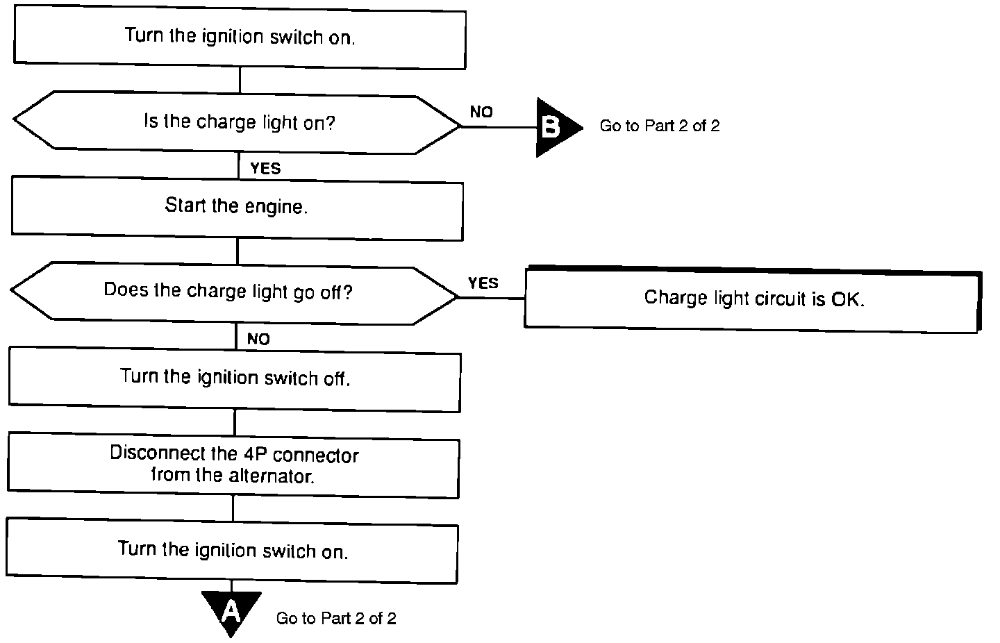

Operation CHARM
: Car repair manuals for everyone.
Home
>>
Acura
>>
1992
>>
Vigor L5-2451cc 2.5L SOHC G25A4 FI
>>
Repair and Diagnosis
>>
Technical Service Bulletins
>>
All Technical Service Bulletins
>>
Charging System - Testing
>>
Diagnostic Charts
>>
Charge System Light Operation
>>
Part 1 of 2
Part 1 of 2
